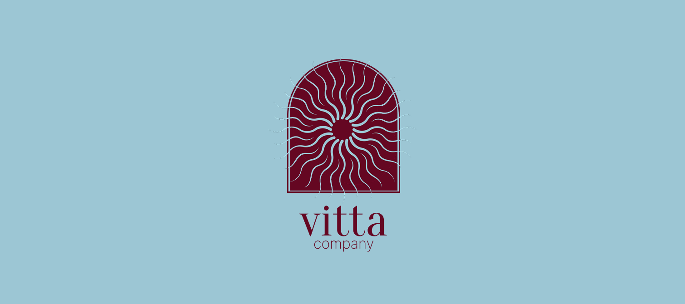
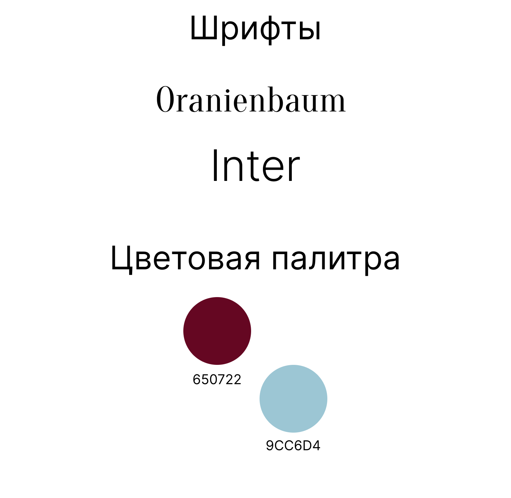
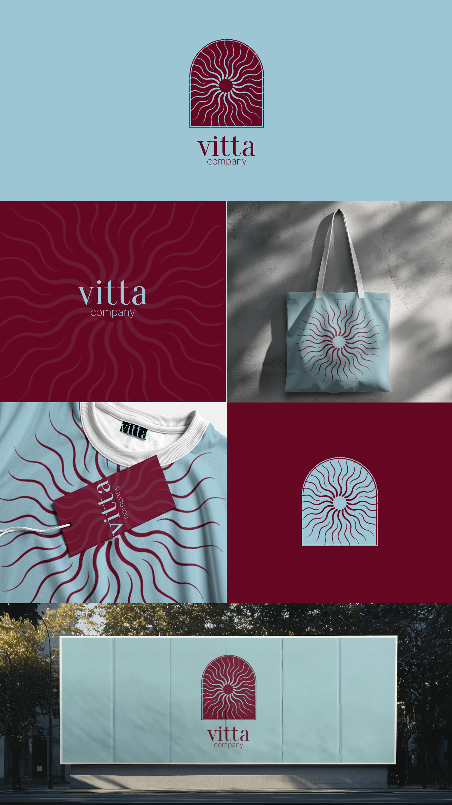

Vitta Company
Логотип и фирменный стиль компании Vitta.

- Клиент
- Vitta Company
- Задача
- Разработать айдентику компании Vitta: логотип, знак, фирменную палитру, шрифтовую пару и паттерн, а также показать применение на носителях — шоппере, одежде с бирками и наружной рекламе.
- Роль
- Графический дизайнер: логотип, арочный лучевой знак, фирменная палитра, шрифтовая пара, бесшовный паттерн, сборка мокапов применения.
Знак построен на соединении двух форм: арка задаёт архитектурную, «оконную» рамку, а внутри неё раскручивается солнце с волнистыми лучами. Лучи намеренно не прямые — они изгибаются в одну сторону, поэтому статичная арка получает вращение, а знак читается как живой источник света, а не как иконка. Тонкая внутренняя обводка повторяет контур арки и удерживает узор от расползания на мелких размерах.
Система держится всего на двух цветах — глубоком бордовом 650722 и мягком голубом 9CC6D4 — и живёт за счёт инверсии: бордовый знак на голубом, голубой на бордовом, паттерн тон-в-тон на бордовом поле. Лучевой мотив разворачивается в бесшовный паттерн, который одинаково ложится и на плоскую печать, и на трикотаж. Шрифтовая пара — Oranienbaum в логотипе и заголовках, Inter в служебном тексте: узкая контрастная антиква даёт характер, гротеск отвечает за читаемость на бирках и мелких носителях.


Айдентика собрана на двух цветах и одном мотиве, поэтому масштабируется без переверстки: знак работает и как арочная печать на фасаде, и как мелкая бирка на горловине, а паттерн из тех же лучей закрывает текстиль и упаковку, не требуя дополнительных элементов.